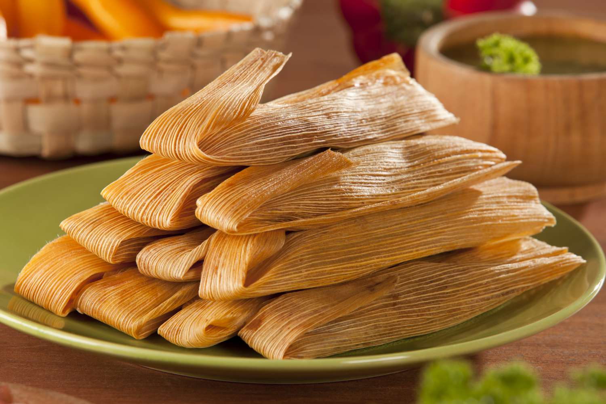

TAMALES RECIPE

Ingredients for the Filling:
- Pork shoulder or chicken: 2 pounds, cooked and shredded
- Dried corn husks: 30-40, soaked in warm water until pliable
- Red chili sauce (prepared or homemade): 2 cups
- Onion: 1 large, finely chopped
- Garlic cloves: 2, minced
- Ground cumin: 1 teaspoon
- Salt and pepper to taste
Ingredients for the Masa Dough:
- Masa harina (corn flour): 3 cups
- Chicken or vegetable broth: 2 cups, warm
- Baking powder: 1 teaspoon
- Shortening or lard: 1 cup
- Salt: 1 teaspoon
Method:
- Prepare the filling by combining the cooked and shredded pork or chicken with red chili sauce, chopped onion, minced garlic, ground cumin, salt, and pepper in a bowl. Mix well and set aside.
- For the masa dough, beat the shortening or lard in a large mixing bowl until fluffy.
- In a separate bowl, mix masa harina, baking powder, and salt. Gradually add this mixture to the beaten shortening, alternating with warm chicken or vegetable broth, and mix until a soft dough forms.
- Drain the corn husks and pat them dry. Spread a thin layer of masa dough on each corn husk, leaving space around the edges.
- Spoon a portion of the meat filling onto the center of the masa dough.
- Roll the corn husk to enclose the filling and fold the bottom end of the husk up.
- Place the tamales upright in a steamer pot with the folded end down. Steam the tamales for about 1-1.5 hours until the masa dough is cooked through and firm.
- Let the tamales cool for a few minutes before unwrapping them.
- Serve the tamales warm and enjoy this delicious dish!
Tamales are Ready to Enjoy!!!